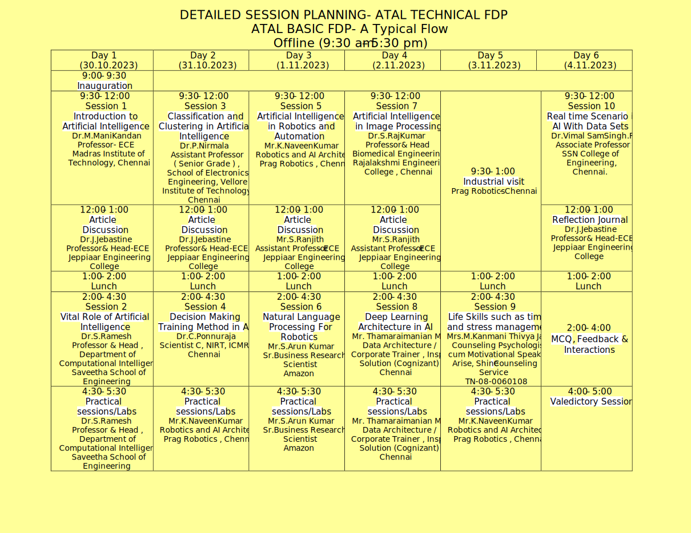

ABOUT THE INSTITUTE
-
Under the aegis of our honorable Chairman, esteemed Col. Dr. Jeppiaar M.A., B.L., Ph.D
. Jeppiaar Engineering College was inaugurated on 15th August 2001 as one of the prestigious
institutions of Jeppiaar Educational Trust. Col. Dr. Jeppiaar is an industrialist, educationalist,
and a philanthropist who works for the technical education for more than 3 decades. It is situated
in Rajiv Gandhi salai, Old Mamallapuram road, next to Sathyabama University,Chennai. Jeppiaar Engineering College
was established in 2001, with the approval of AICTE & it is affiliated to Anna University. The college is accredited
by National Board of Accreditation (NBA).
-
The dynamic director of our college, Dr. Regeena. J. Murli,B.Tech., M.B.A.,Ph.D daughter of Col.Dr. Jeppiaar, with
her hard work and determination, has made the institution reach great heights. Jeppiaar Engineering College is affiliated
to Anna University and in the short span of time, it has grown into an institution that provides excellent technical
education while keeping the overall growth and development of the students in mind. Both academic and non-academic
activities are given equal importance; at Jeppiaar Engineering College, we take our students’ success very seriously.
Experienced and qualified staff, quality driven labs, Excellent infra structure, effective classroom teaching and
superior accountability are the reasons for the students’ achievements both in academic and co-curricular activities.
-
The college is dedicated to prepare future graduates with the knowledge and skills essential to work and outclass in the aggressive global environment. Having dedicated to innovative learning, the college enables the students to achieve. Pursuing the goal of constant learning, the Institution prepares the students to score commendably in the academics. The college develops the students’ personality by personality development programmes and placement training. Discipline and counseling are meticulously done.
VISION OF THE INSTITUTE
To build Jeppiaar Engineering College as an institution of academic excellence in technology and management education, leading to become a world class university.
MISSION OF THE INSTITUTE
The mission of JSS Academy of Technical Education, Noida is to
- To excel in teaching and learning, research and innovation by promoting the principles of scientific analysis and creative thinking.
- To participate in the production, development and dissemination of knowledge and interact with national and international communities.
- To equip students with values, ethics and life skills needed to enrich their lives and enable them to contribute for the progress of society.
- To prepare students for higher studies and lifelong learning, enrich them with the practical skills necessary to excel as future professionals and entrepreneurs for the benefit of Nation’s economy.
ABOUT THE DEPARTMENT
-
Department of Electronics and Communication Engineering is one of the
preferred branches of engineering disciplines in the academy. The Department Laboratories are fully air conditioned, well equipped with computer systems highly configured computational units. The Department has well experienced and certified faculty in all specializations such as VLSI design, Applied Electronics, Microwave & Optical Engineering Communication Systems, Medical Electronics, Digital Systems and Embedded systems. Colonel Dr.JEPPIAAR CENTRE FOR KNOWLEDGE SHARING is collaborated with NIELIT, Chennai accompanied by fully equipped Laboratory center along with required Hardware and Software tools.
-
The Department has signed MoU’s with Government sector and Private sectors such as NIELIT-Chennai, BSNL –Chennai, Vi Micro Systems Pvt. Ltd., – Chennai for training both the Faculty and students to provide joint venture programs, project work, problems solving and Research & Development. Promotion of Academic – Industry interaction and English Language proficiency training is provided.
-
The Department has also initiated two professional societies namely, IEEE Communication Society and IETE society. The department organizes various training programs with renowned expert trainers from industries and multinational companies to improve the oral, written skills, aptitude skills, of students so they are easily hired by leading core and IT industries. The Department excels with an outcome of 90% of students getting placed in various top companies like Infosys, Wipro, Cognizant, Capegemini, CSC, NTT Data, MINDTREE, L&T InfoTech, Excela.com & etc. Students pursue higher studies in leading universities abroad and the department secured Anna University Gold Medal during the year 2006, 2013 and earns more Anna University ranks every year. Our students of ECE have participated in The Smart India Hackathon 2017 under the Government of India in an innovative notion.
ABOUT THE ATAL ACADEMY
- AICTE Training & Learning (ATAL) Academy is established with a
vision to empower faculty to achieve goals of Higher Education such as
access, equity and quality.
- The Academy is conducting FDP's on a large scale in the entire country.
These program will help participants get acquainted with new
technological developments.
VISION OF THE DEPARTMENT
TTo become a centre of excellence to provide quality education and produce creative engineers in the field of Electronics and Communication Engineering to excel at an international level.
MISSION OF THE DEPARTMENT
- M1 Inculcate creative thinking and zeal for research to excel in teaching-learning process.
- M2 Create and disseminate technical knowledge in collaboration with industries.
- M3 Provide ethical and value based education by promoting activities for the betterment of the society.
- M4 Encourage higher studies, employability skills, entrepreneurship and research to produce efficient professionals thereby adding value to the nation’s economy.
ABOUT THE FDP
The Faculty Development Program (FDP) embarks on an invigorating, transcendental exploration of artificial intelligence (AI) beyond its multifaceted application and influence. From AI's role in innovative fields to sustainable solutions to environmental challenges, FDP shows transformative potential. Participants delve into AI's role in improving ethical considerations, healthcare revolutions, adaptive learning, social impact, and AI's impact on the environment virtual. In addition, the program delves into human-machine collaboration strategies and AI applications in mental health. Through this diverse range of modules, FDP enables educators to navigate the dynamic landscape of AI while emphasizing human ethics and well-being. Addressing the symbiotic role of AI in innovative sectors, its potential to revolutionize healthcare and education, and its impact on social welfare and the environment, FDP prepares for participants responsibly embrace the potential of AI, driving a future where innovation is fully aligned with ethical considerations and human advancement.
CONTENT OF FDP TO BE COVERED
Title of the FDP: Impact of AI and its Application
Objectives:
FDP focus on
- To introduce the foundations and state-of- the-art ways in Al
- To practical implement with different algorithms to provide real skills to the participants.
- To address ultramodern trends in the field of Artificial Intelligence with real time problem working.
- To develop Al intelligent systems by reading the geste of humans.
TARGETED PARTICIPANTS
The ATAL FDP is intended for PG/Ph.D. Scholar, faculty members and assiduity professionals who are interested to work in the Sphere of Artificial Intelligence. Short listing of the candidates will be done on First Cum First Serve Basis and the number of participants is limited to 50.
Possible Dates (1 week)
30th October 2023 to 4th November 2023
DETAILED SESSION PLANNING-
